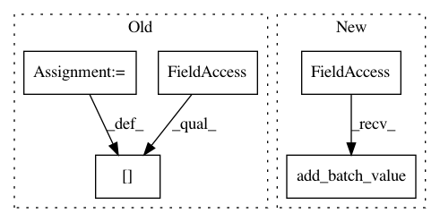

ac7b6cf0992219b5118738e05672306f8acc215f,catalyst/dl/state.py,RunnerState,on_batch_start_pre,#RunnerState#,153
Before Change
def on_batch_start_pre(self):
self.batch_metrics = defaultdict(lambda: 0)
self.batch_metrics["base/data_time"] = time.time() - self._datatime
def on_batch_start_post(self):
pass
After Change
def on_batch_start_pre(self):
self.metrics.begin_batch()
self.metrics.add_batch_value(
"base/data_time", time.time() - self._datatime
)
def on_batch_start_post(self):
pass
In pattern: SUPERPATTERN
Frequency: 3
Non-data size: 5
Instances
Project Name: Scitator/catalyst
Commit Name: ac7b6cf0992219b5118738e05672306f8acc215f
Time: 2019-02-17
Author: poletaev.va@gmail.com
File Name: catalyst/dl/state.py
Class Name: RunnerState
Method Name: on_batch_start_pre
Project Name: Scitator/catalyst
Commit Name: 01298b93648d59c7f5e1617ace5131c8074eddea
Time: 2019-02-26
Author: scitator@gmail.com
File Name: catalyst/dl/callbacks/metrics.py
Class Name: MetricCallback
Method Name: on_batch_end
Project Name: Scitator/catalyst
Commit Name: ac7b6cf0992219b5118738e05672306f8acc215f
Time: 2019-02-17
Author: poletaev.va@gmail.com
File Name: catalyst/dl/state.py
Class Name: RunnerState
Method Name: on_batch_end_pre